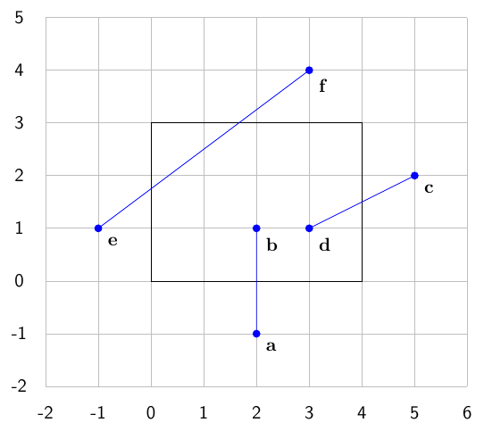
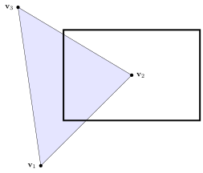
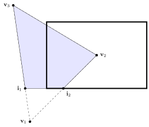
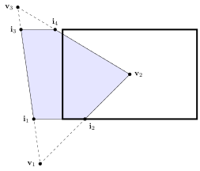
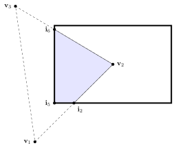
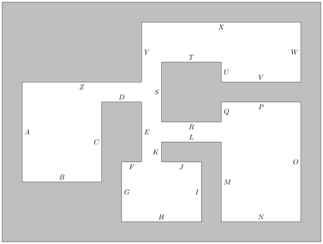
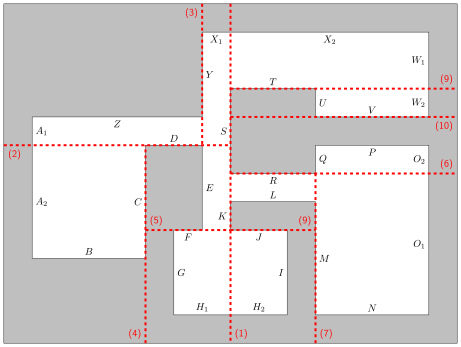
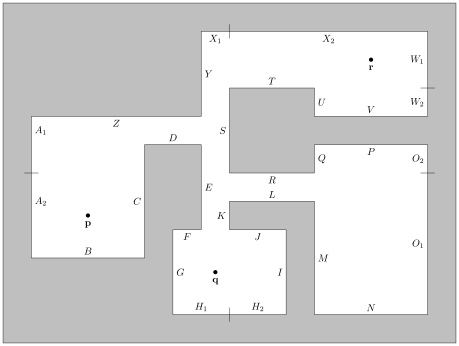

Clipping and Hidden Surface Determination Exercises
Clipping and Hidden Surface Determination Exercises#
Exercise 21
Use the Cyrus-Beck algorithm to clip the lines \(\mathbf{a} \to \mathbf{b}\), \(\mathbf{c} \to \mathbf{d}\) and \(\mathbf{e} \to \mathbf{f}\) to the visible region shown in the diagram below.
{kind=link}

Solution to Exercise 21
Line \(\mathbf{a} \to \mathbf{b}\): clip to bottom edge
\(d(\mathbf{a}) < 0\) and \(d(\mathbf{b}) > 0\) so clip \(\mathbf{a}\) to bottom edge
Clip \(\mathbf{c} \to \mathbf{d}\) to right edge
\(d(\mathbf{c}) < 0\) and \(d(\mathbf{d}) > 0\) so clip \(\mathbf{c}\) to right edge
Clip \(\mathbf{e} \to \mathbf{f}\) to top edge
\(d(\mathbf{e}) > 0\) and \(d(\mathbf{f}) < 0\) so clip \(\mathbf{f}\) to top edge
Clip \(\mathbf{e} \to \mathbf{f}\) to left edge
\(d(\mathbf{e}) < 0\) and \(d(\mathbf{f}) > 0\) so clip \(\mathbf{e}\) to left edge
Exercise 22
Use the Sutherland-Hodgman algorithm to clip the polygon with vertices \(\mathbf{v}_1\), \(\mathbf{v}_2\) and \(\mathbf{v}_3\) to the rectangle shown below
{kind=link}

Solution to Exercise 22
Bottom edge: \(inputlist = \{ \mathbf{v}_1, \mathbf{v}_2, \mathbf{v}_3 \}\), \(outputlist = \emptyset\)
\(\mathbf{v}_1\) is behind and \(\mathbf{v}_3\) is in front so clip \(\mathbf{v}_3 \to \mathbf{v}_1\) to \(\mathbf{i}_1\) and add to \(outputlist\)
\(\mathbf{v}_2\) is in front and \(\mathbf{v}_1\) is behind so clip \(\mathbf{v}_1 \to \mathbf{v}_2\) to \(\mathbf{i}_2\) and add \(\mathbf{i}_2\) and \(\mathbf{v}_2\) to \(outputlist\)
\(\mathbf{v}_3\) is in front so add to \(outputlist\)
{kind=link}

Right edge:
\(\mathbf{i}_1\) is in front so add to \(outputlist\)
\(\mathbf{i}_2\) is in front so add to \(outputlist\)
\(\mathbf{v}_2\) is in front so add to \(outputlist\)
\(\mathbf{v}_3\) is in front so add to \(outputlist\)
Top edge:
\(\mathbf{i}_1\) is in front and \(\mathbf{v}_3\) is behind so clip \(\mathbf{v}_3 \to \mathbf{i}_1\) to \(\mathbf{i}_3\) and add \(\mathbf{i}_3\) and \(\mathbf{i}_1\) to \(outputlist\)
\(\mathbf{i}_2\) is in front so add to \(outputlist\)
\(\mathbf{v}_2\) is in front so add to \(outputlist\)
\(\mathbf{v}_3\) is behind and \(\mathbf{v}_2\) is in front so clip \(\mathbf{v}_2 \to \mathbf{v}_3\) to \(\mathbf{i}_4\) and add to \(outputlist\)
{kind=link}

Left edge:
\(\mathbf{i}_3\) is behind and so is \(\mathbf{i}_4\) so do nothing
\(\mathbf{i}_1\) is behind and so is \(\mathbf{i}_3\) so do nothing
\(\mathbf{i}_2\) is in front and \(\mathbf{i}_1\) is behind so clip \(\mathbf{i}_1 \to \mathbf{i}_2\) to \(\mathbf{i}_5\) and add \(\mathbf{i}_5\) and \(\mathbf{i}_2\) to \(outputlist\)
\(\mathbf{v}_2\) is in front so add to \(outputlist\)
\(\mathbf{i}_4\) is behind and \(\mathbf{v}_2\) is in front so clip \(\mathbf{v}_2 \to \mathbf{i}_4\) to \(\mathbf{i}_6\) and add to \(outputlist\)
{kind=link}

Exercise 23
A tetrahedron object is defined by the vertex and face matrices
The object is viewed from the origin. Determine which faces of the tetrahedron are front facing.
Solution to Exercise 23
Face 1:
Since \(\mathbf{n} \cdot (\mathbf{v}_3 - \mathbf{p}) > 0\) then face 1 is back facing.
Face 2:
Since \(\mathbf{n} \cdot (\mathbf{v}_2 - \mathbf{p}) < 0\) then face 2 is front facing.
Face 3:
Since \(\mathbf{n} \cdot (\mathbf{v}_1 - \mathbf{p}) > 0\) then face 3 is back facing.
Face 4:
Since \(\mathbf{n} \cdot (\mathbf{v}_3 - \mathbf{p}) < 0\) then face 4 is front facing.
Exercise 24
A plan view of a map of a computer game is shown in the diagram below. Assuming all vectors are facing towards the interior, construct a BSP tree of the map.

Solution to Exercise 24

Note that this solution is not unique.
Exercise 25
A solution to Exercise 24 is shown below.

Determine the rendering order of the polygons when the world is viewed from the positions \(\mathbf{p}\), \(\mathbf{q}\) and \(\mathbf{r}\).
Solution to Exercise 25
Position \(\mathbf{p}\):
Position \(\mathbf{q}\):
Position \(\mathbf{r}\):